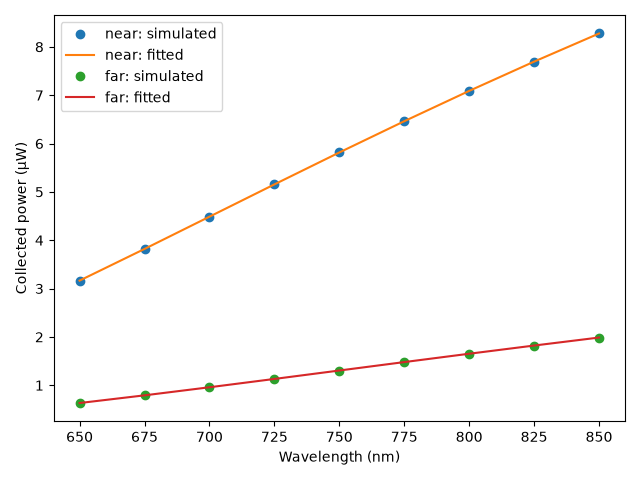

Note
Go to the end to download the full example code.
Recover an epidermis change#
Fit a change in the epidermis preset’s melanin fraction to noiseless, simulated multispectral detector powers. The same P1 model generates and fits the data, so this example checks the workflow under ideal assumptions; it does not establish recovery accuracy for real skin or a particular instrument.
import os
import matplotlib.pyplot as plt
import numpy as np
from scipy.optimize import minimize_scalar
import MomentRT
ureg = MomentRT.ureg
Configure the sample and sensor#
The superficial layer is deliberately thick and the mesh is coarse to keep the example quick. Both are illustrative, not a resolved skin measurement. The baseline dermis-like background is fixed and has the same refractive index as the epidermis. Source power is diffuse power already coupled in.
wavelengths = np.linspace(650, 850, 9) * ureg.nm
background = MomentRT.Material(
phase_function=MomentRT.Isotropic(),
absorption=0.025 / ureg.mm,
reduced_scattering=1.2 / ureg.mm,
refractive_index=1.4,
)
source = MomentRT.SurfaceSource(
face="z_min",
position=np.array([-1.5, 0, 0]) * ureg.mm,
radius=0.8 * ureg.mm,
wavelength=wavelengths[0],
optical_power=1 * ureg.mW,
)
detectors = {
name: MomentRT.SurfaceDetector(
face="z_min",
position=np.array([position, 0, 0]) * ureg.mm,
radius=0.75 * ureg.mm,
collection_axis=[0, 0, -1],
acceptance_angle=90 * ureg.degree,
)
for name, position in (("near", 0.5), ("far", 1.5))
}
boundary = MomentRT.RobinBoundary(effective_reflectance=0.4)
solver = MomentRT.P1(
boundaries={face: boundary for face in MomentRT.boundary.FACES},
)
# The layer geometry stays fixed during fitting, so generate its conforming
# tetrahedral mesh once and reuse it for every trial.
mesh_sample = MomentRT.StructuredMedium(
origin=(-3, -3, 0) * ureg.mm,
size=(6, 6, 3) * ureg.mm,
)
mesh_sample.add_background(material=background)
mesh_sample.add_layer(name="Epidermis", thickness=0.5 * ureg.mm, material=background)
mesh_resolution = 0.2 * ureg.mm
mesh = MomentRT.TetrahedralMesh.from_sample(
sample=mesh_sample,
resolution=mesh_resolution,
)
Define the forward model#
The preset computes absorption and scattering at each wavelength. Tabulating those values lets the existing spectral sweep reuse geometry within a trial. Only melanin fraction varies; all other parameters are assumed known. This model fraction is not a direct clinical pigmentation measurement.
def configure_simulation(
*, melanin_fraction: float, trial_mesh: MomentRT.TetrahedralMesh
) -> MomentRT.Simulation:
"""Configure a simulation for a dimensionless epidermal melanin fraction.
Parameters
----------
melanin_fraction : float
Epidermis preset's melanin fraction, between zero and one.
trial_mesh : TetrahedralMesh
Mesh conforming to the fixed sample geometry.
Returns
-------
Simulation
Configuration with the requested epidermal material.
"""
epidermis = [
MomentRT.Epidermis(
melanin_fraction=melanin_fraction,
wavelength=wavelength,
refractive_index=1.4,
)
for wavelength in wavelengths
]
material = MomentRT.SpectralMaterial(
wavelengths=wavelengths,
absorption=np.array(
[item.absorption.to("1/mm").magnitude for item in epidermis]
)
/ ureg.mm,
reduced_scattering=np.array(
[item.reduced_scattering.to("1/mm").magnitude for item in epidermis]
)
/ ureg.mm,
refractive_index=1.4,
phase_function=MomentRT.Isotropic(),
)
sample = MomentRT.StructuredMedium(
origin=(-3, -3, 0) * ureg.mm,
size=(6, 6, 3) * ureg.mm,
)
sample.add_background(material=background)
sample.add_layer(name="Epidermis", thickness=0.5 * ureg.mm, material=material)
return MomentRT.Simulation(
medium=sample,
source=source,
mesh=trial_mesh,
solver=solver,
detectors=detectors,
)
Check mesh convergence before fitting#
Examine the known baseline configuration at 650 nm, the source wavelength. The study does not establish convergence at other wavelengths or parameter values, including the unknown changed state. Two successive refinements must pass the power and footprint-area tolerances. A passing study does not establish P1 model accuracy.
baseline_fraction = 0.01
baseline_simulation = configure_simulation(
melanin_fraction=baseline_fraction,
trial_mesh=mesh,
)
study = MomentRT.MeshConvergence(
simulation=baseline_simulation,
mesh_resolutions=[
0.8 * ureg.mm,
0.4 * ureg.mm,
0.2 * ureg.mm,
0.15 * ureg.mm,
0.1 * ureg.mm,
],
power_rtol=0.05,
area_rtol=0.05,
required_consecutive=2,
)
convergence_result = study.run()
convergence_figure = convergence_result.plot(
power_unit="uW",
area_unit="mm^2",
show=False,
)
# The assessment applies to the baseline at 650 nm. The inverse fit below
# uses the configured 0.2 mm mesh and demonstrates the workflow; convergence
# of the fitted powers across wavelengths and parameter values is not established.
Detector mesh convergence at 650.0 nm
Mesh Nodes Time (s) Source err near µW Δ power Area err far µW Δ power Area err
-------------------------------------------------------------------------------------------------------------------------
0.8 mm 479 0.06 0.93% 6.284 — 2.18% 0.9677 — 6.79%
fluence: Negative nodal fluence.
0.4 mm 2,086 0.24 0.80% 5.149 22.05% 1.98% 0.8497 13.88% 1.39%
0.2 mm 12,462 2.25 0.76% 4.319 19.22% 1.66% 0.9363 9.24% 1.62%
0.15 mm 27,861 9.61 0.31% 4.317 0.03% 0.03% 0.9669 3.16% 0.03%
0.1 mm 87,318 117.09 0.36% 4.398 1.83% 0.11% 0.9851 1.86% 0.38%
Converged: True
Consecutive passing refinements at the fine end: 2 of 2 required.
Tolerances: power 5.00% relative + 0 µW absolute; footprint area 5.00% relative.
Recommended mesh: 0.1 mm target resolution.
Total time: 129.26 s
Generate and fit noiseless measurements#
Treat the baseline as known and fit a bounded change from it. In this ideal demonstration the data and fit share the same mesh, model, source, and detector assumptions. Normalizing each residual by its simulated measurement gives each detector and wavelength equal relative weight; it is not a noise model. Each optimizer evaluation performs a new wavelength sweep.
true_change = 0.004
observed_simulation = configure_simulation(
melanin_fraction=baseline_fraction + true_change,
trial_mesh=mesh,
)
observed = observed_simulation.sweep(wavelengths=wavelengths)
observed_power = np.stack(
[observed.detector_power[name].to("W").magnitude for name in detectors]
)
def objective(*, change: float) -> float:
"""Return the sum of squared relative detector-power residuals.
Parameters
----------
change : float
Dimensionless change in the epidermal melanin fraction.
Returns
-------
float
Sum of squared relative residuals across detectors and wavelengths.
"""
simulation = configure_simulation(
melanin_fraction=baseline_fraction + change,
trial_mesh=mesh,
)
predicted = simulation.sweep(wavelengths=wavelengths)
power = np.stack(
[predicted.detector_power[name].to("W").magnitude for name in detectors]
)
return float(np.sum(((power - observed_power) / observed_power) ** 2))
fit = minimize_scalar(
lambda change: objective(change=change),
bounds=(-0.005, 0.02),
method="bounded",
options={"xatol": 1e-5},
)
if not fit.success:
raise RuntimeError(f"The optimization failed: {fit.message}")
fitted_simulation = configure_simulation(
melanin_fraction=baseline_fraction + fit.x,
trial_mesh=mesh,
)
fitted = fitted_simulation.sweep(wavelengths=wavelengths)
print(f"Baseline melanin fraction: {baseline_fraction:.4f}")
print(f"True melanin fraction change: {true_change:+.4f}")
print(f"Fitted melanin fraction change: {fit.x:+.4f}")
print(f"Sum of squared relative residuals: {fit.fun:.3g}")
Baseline melanin fraction: 0.0100
True melanin fraction change: +0.0040
Fitted melanin fraction change: +0.0040
Sum of squared relative residuals: 8.31e-08
Compare the detector spectra#
The fit uses independent monochromatic powers, not a broadband integral. Detector powers integrate modeled escaping irradiance over each sampled aperture with a Lambertian angular approximation. A close fit here is expected because the simulated observations were generated by exactly the same model.
figure, axes = plt.subplots()
for index, name in enumerate(detectors):
axes.plot(
wavelengths.magnitude,
observed_power[index] * 1e6,
"o",
label=f"{name}: simulated",
)
axes.plot(
wavelengths.magnitude,
fitted.detector_power[name].to("uW").magnitude,
"-",
label=f"{name}: fitted",
)
axes.set_xlabel("Wavelength (nm)")
axes.set_ylabel("Collected power (µW)")
axes.legend()
figure.tight_layout()

Inspect the modeled fluence#
This volume is the fitted first-wavelength P1 solution. Transparent boxes outline the epidermis and the underlying background; they show the model geometry, not a sampled material map. The overlay shows all tetrahedral edges. The volume is interpolated onto a display grid. Use the legend to toggle overlays. The coarse mesh and sampled source and apertures need convergence checks. P1 can be inaccurate near illumination, and real retrieval additionally needs noise, calibration, parameter-identifiability, and independent forward-model validation.
background_layer = MomentRT.Layer(
name="Underlying background",
depth=0.5 * ureg.mm,
thickness=2.5 * ureg.mm,
material=background,
)
gallery_system_figure = fitted.results[0].fluence.plot(
view="volume",
scale="linear",
display_resolution=0.1 * ureg.mm,
overlays=[
*fitted_simulation.medium.structures,
background_layer,
fitted_simulation.mesh,
source,
*detectors.values(),
],
show=False,
)
Display figures when running the script directly#
Sphinx-Gallery embeds the figures itself, so opening interactive windows is only useful outside the documentation build.
if os.environ.get("MOMENTRT_SPHINX_GALLERY") != "1":
convergence_figure.show()
gallery_system_figure.show()
plt.show()
Total running time of the script: (3 minutes 49.961 seconds)